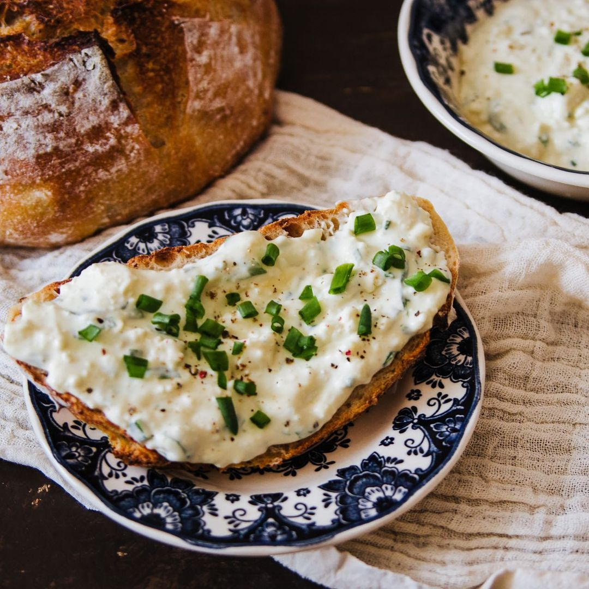

Bryndzová nátierka — Normy Jedál
Cerstvy chrumkavy zemiakovy chlebik s bryndzovou natierkou❤️ pripravene s laskou
.
.
.
.
#dnesjem #vegetables
#foodphotography #foodphotographer #foodartblog #mojejedlo #topjedlo #foodstagram #foodgallery #foodlover #homemade #foodstylistlife #goodfoods #katkasgoodfood #food #foodie #domacejedlo#mojerecepty #fooddetails #healthyfood #london #slovakblogger #slovakia #bryndza #bryndzovanatierka #zemiakovychlebik #kvasok